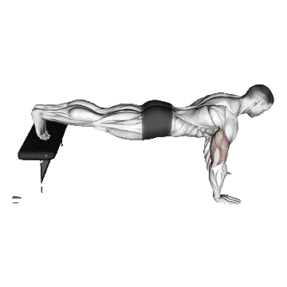

Flexiones declinado
Flexiones declinado es un ejercicio de pecho centrado en Pectoral superior, Tríceps braquial, Bíceps braquial. Puedes consultar las repeticiones medias y los estándares de repeticiones en una sola página.

Repeticiones medias: Intermedio
Referencia para una persona de nivel intermedio.
Repeticiones medias de Flexiones declinado
| Nivel | ||
|---|---|---|
| Principiante | < 1 | < 1 |
| Novato | 10 | < 1 |
| Intermedio | 28 | 16 |
| Avanzado | 50 | 39 |
| Élite | 74 | 65 |
Nota: estos valores son estimaciones de repeticiones medias que pueden realizarse en una serie. Pueden variar según el peso corporal, el rango de movimiento, el tempo y otros factores personales. Consulta los datos detallados en la tabla inferior.
Estándares de repeticiones de Flexiones declinado
Hombres por peso corporal (lb) [Repeticiones]
| Peso corporal | Principiante | Novato | Intermedio | Avanzado | Élite |
|---|---|---|---|---|---|
| 110 | < 1 | 8 | 27 | 51 | 78 |
| 120 | < 1 | 9 | 27 | 51 | 77 |
| 130 | < 1 | 9 | 28 | 50 | 75 |
| 140 | < 1 | 10 | 28 | 49 | 73 |
| 150 | < 1 | 10 | 28 | 49 | 71 |
| 160 | < 1 | 11 | 28 | 48 | 70 |
| 170 | < 1 | 11 | 27 | 47 | 68 |
| 180 | < 1 | 11 | 27 | 46 | 66 |
| 190 | < 1 | 11 | 27 | 45 | 64 |
| 200 | < 1 | 11 | 26 | 44 | 63 |
| 210 | < 1 | 11 | 26 | 43 | 61 |
| 220 | < 1 | 11 | 26 | 42 | 60 |
| 230 | < 1 | 11 | 25 | 41 | 58 |
| 240 | 1 | 11 | 25 | 40 | 57 |
| 250 | 1 | 11 | 24 | 39 | 56 |
| 260 | 1 | 11 | 24 | 39 | 54 |
| 270 | 1 | 10 | 23 | 38 | 53 |
| 280 | 1 | 10 | 23 | 37 | 52 |
| 290 | 1 | 10 | 22 | 36 | 51 |
| 300 | 1 | 10 | 22 | 35 | 50 |
| 310 | 1 | 10 | 21 | 35 | 49 |
Hombres por edad [Repeticiones]
| Edad | Principiante | Novato | Intermedio | Avanzado | Élite |
|---|---|---|---|---|---|
| 15 | < 1 | 5 | 19 | 38 | 59 |
| 20 | < 1 | 9 | 26 | 48 | 71 |
| 25 | < 1 | 10 | 28 | 50 | 74 |
| 30 | < 1 | 10 | 28 | 50 | 74 |
| 35 | < 1 | 10 | 28 | 50 | 74 |
| 40 | < 1 | 10 | 28 | 50 | 74 |
| 45 | < 1 | 8 | 25 | 46 | 69 |
| 50 | < 1 | 6 | 21 | 41 | 63 |
| 55 | < 1 | 4 | 18 | 36 | 56 |
| 60 | < 1 | < 1 | 13 | 30 | 48 |
| 65 | < 1 | < 1 | 10 | 24 | 41 |
| 70 | < 1 | < 1 | 6 | 19 | 34 |
| 75 | < 1 | < 1 | 3 | 14 | 27 |
| 80 | < 1 | < 1 | < 1 | 9 | 21 |
| 85 | < 1 | < 1 | < 1 | 6 | 16 |
| 90 | < 1 | < 1 | < 1 | 3 | 11 |
Mujeres por peso corporal (lb) [Repeticiones]
| Peso corporal | Principiante | Novato | Intermedio | Avanzado | Élite |
|---|---|---|---|---|---|
| 90 | < 1 | < 1 | 9 | 31 | 57 |
| 100 | < 1 | < 1 | 11 | 33 | 58 |
| 110 | < 1 | < 1 | 13 | 34 | 59 |
| 120 | < 1 | < 1 | 15 | 35 | 58 |
| 130 | < 1 | < 1 | 16 | 36 | 58 |
| 140 | < 1 | 2 | 17 | 36 | 58 |
| 150 | < 1 | 3 | 17 | 36 | 57 |
| 160 | < 1 | 4 | 18 | 36 | 56 |
| 170 | < 1 | 5 | 18 | 36 | 55 |
| 180 | < 1 | 5 | 18 | 36 | 54 |
| 190 | < 1 | 6 | 19 | 35 | 54 |
| 200 | < 1 | 6 | 19 | 35 | 53 |
| 210 | < 1 | 6 | 19 | 34 | 52 |
| 220 | < 1 | 6 | 19 | 34 | 51 |
| 230 | < 1 | 7 | 18 | 34 | 50 |
| 240 | < 1 | 7 | 18 | 33 | 49 |
| 250 | < 1 | 7 | 18 | 33 | 48 |
| 260 | < 1 | 7 | 18 | 32 | 47 |
Mujeres por edad [Repeticiones]
| Edad | Principiante | Novato | Intermedio | Avanzado | Élite |
|---|---|---|---|---|---|
| 15 | < 1 | < 1 | 10 | 29 | 51 |
| 20 | < 1 | < 1 | 15 | 37 | 62 |
| 25 | < 1 | < 1 | 16 | 39 | 65 |
| 30 | < 1 | < 1 | 16 | 39 | 65 |
| 35 | < 1 | < 1 | 16 | 39 | 65 |
| 40 | < 1 | < 1 | 16 | 39 | 65 |
| 45 | < 1 | < 1 | 14 | 35 | 60 |
| 50 | < 1 | < 1 | 11 | 31 | 54 |
| 55 | < 1 | < 1 | 9 | 27 | 48 |
| 60 | < 1 | < 1 | 6 | 22 | 41 |
| 65 | < 1 | < 1 | 3 | 17 | 34 |
| 70 | < 1 | < 1 | < 1 | 12 | 28 |
| 75 | < 1 | < 1 | < 1 | 8 | 22 |
| 80 | < 1 | < 1 | < 1 | 5 | 16 |
| 85 | < 1 | < 1 | < 1 | 1 | 12 |
| 90 | < 1 | < 1 | < 1 | < 1 | 8 |
Nota: los valores de la tabla son una referencia de repeticiones posibles en una serie. Usa los datos por peso corporal para estimar la carga relativa y los datos por edad para ver tendencias.
Músculos trabajados
| Grupo | Músculos |
|---|---|
| Músculos principales | Pectoral superior, Tríceps braquial, Bíceps braquial |
| Músculos secundarios | Deltoides |
| Estabilizadores | Recto abdominal |
| Agarre | Flexores del antebrazo |
Registra y analiza en la app Shiba
Consulta pesos, repeticiones y progreso en un solo lugar.
Cómo leer la tabla
| Nivel | Descripción | Distribución |
|---|---|---|
| Principiante | Domina la técnica correcta y entrena de forma constante durante al menos 1 mes. | Parte inferior 5% |
| Novato | Entrena de forma constante durante al menos 6 meses. | Top 80% |
| Intermedio | Entrena de forma constante durante al menos 2 años. | Top 50% |
| Avanzado | Entrena de forma constante durante más de 5 años. | Top 20% |
| Élite | Entrena este ejercicio de forma especializada durante más de 5 años. | Top 5% |